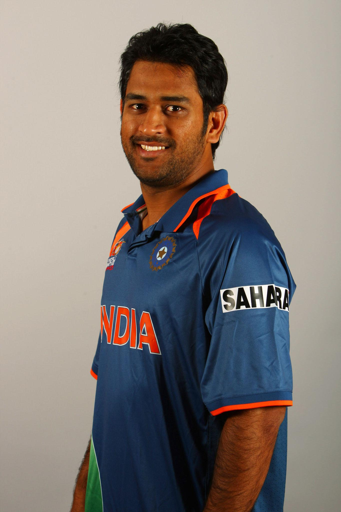
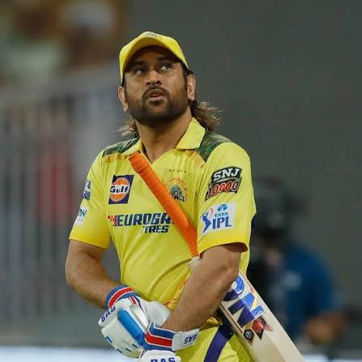
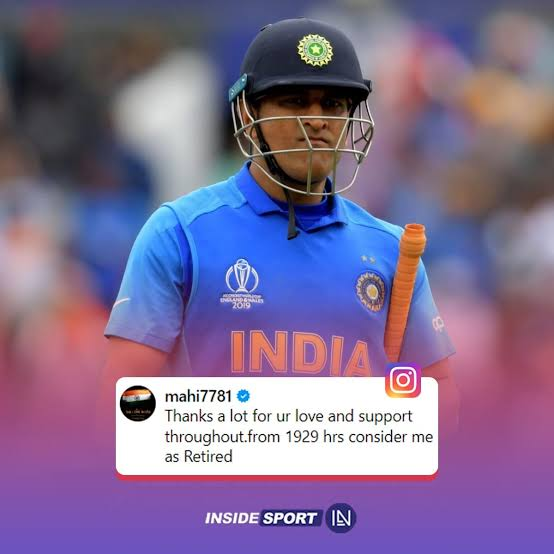
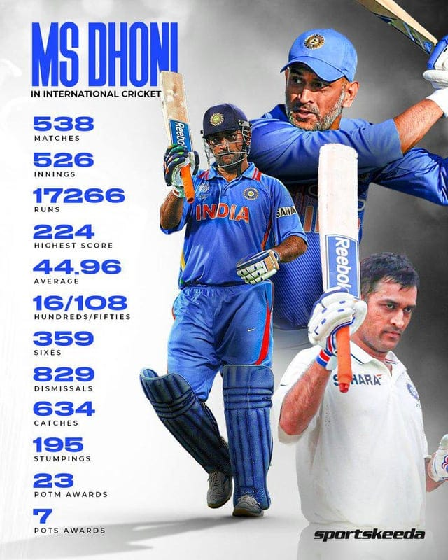

Biography of M.S. Dhoni
Introduction
Mahendra Singh Dhoni was born on July 7, 1981, in Ranchi, Jharkhand. His father, Pan Singh, worked in a public sector company, and his mother, Devaki Devi, was a homemaker. During his school days at DAV Jawahar Vidya Mandir, Dhoni was more interested in football and badminton than cricket. He initially played as a goalkeeper in football before his coach suggested he try wicketkeeping in cricket. Dhoni soon developed a strong passion for the game and began playing for local cricket clubs. His talent and hard work helped him earn a place in the Bihar Under-19 team, marking the beginning of his cricket journey.
Early Life
Dhoni was born into a middle-class family, with his father Pan Singh working in a public sector company. During his school days at DAV Jawahar Vidya Mandir, he was interested in football and badminton. He played as a goalkeeper before his coach encouraged him to try wicketkeeping in cricket. Dhoni soon developed a passion for cricket and started playing for local clubs. His talent earned him a place in the Bihar Under-19 team, marking the start of his professional journey.

International Debut
MS Dhoni made his international debut for India in December 2004 in an ODI match against Bangladesh. Although he was run out for zero in his first match, he did not lose confidence. In 2005, he scored his first century (148 runs) against Pakistan, which made him famous overnight. His aggressive batting style and fearless approach impressed cricket fans and selectors. He made his Test debut later in 2005 against Sri Lanka. Dhoni soon became a regular member of the Indian team due to his consistent performances and strong wicketkeeping skills.

Rise as Captain
MS Dhoni was appointed captain of the Indian T20 team in 2007. Under his leadership, India won the inaugural ICC T20 World Cup in South Africa the same year. His calm decision-making and smart strategies impressed everyone. Soon, he became the captain of the ODI and Test teams as well. In 2011, he led India to victory in the ICC Cricket World Cup after 28 years. In 2013, India also won the ICC Champions Trophy under his captaincy, making him one of the most successful captains in cricket history.

2011 World Cup Glory
The 2011 Cricket World Cup was a historic moment in MS Dhoni’s career. As captain, he led India brilliantly throughout the tournament. In the final against Sri Lanka at Mumbai’s Wankhede Stadium, Dhoni promoted himself up the batting order. He played a match-winning knock of 91* runs under pressure. Dhoni finished the game with a famous six, which became one of the most iconic moments in cricket history. India won the World Cup after 28 years, and Dhoni’s leadership was praised worldwide

IPL Career
MS Dhoni has been one of the most successful players in the Indian Premier League (IPL). He has led the Chennai Super Kings (CSK) since the beginning of the tournament in 2008. Under his captaincy, CSK has won multiple IPL titles and has been one of the most consistent teams in the league. Dhoni is known for his excellent finishing skills and smart captaincy in high-pressure matches. His calm leadership and strong bond with the team have made CSK one of the most popular franchises. Even after retiring from international cricket, he continues to play in the IPL and remains a fan favorite.
Retirement
MS Dhoni announced his retirement from international cricket on August 15, 2020, through a social media post. He had already retired from Test cricket in 2014, stepping down as captain midway through a series in Australia. After 2020, he officially ended his career in all international formats. Dhoni finished his career as one of India’s most successful captains and wicketkeeper-batsmen. Fans across the country felt emotional about his retirement and thanked him for his contributions to Indian cricket. Even after retiring internationally, he continues to play in the IPL and remains an inspiration to young cricketers.
Legacy
MS Dhoni’s legacy in cricket is marked by his calm leadership and remarkable achievements. He is the only captain to win all three major ICC white-ball trophies. Dhoni is remembered for his ability to finish matches under pressure and for his iconic helicopter shot. He inspired a new generation of cricketers from small towns to dream big. His humility, discipline, and team-first attitude earned him respect worldwide. Even after retirement, Dhoni remains a symbol of confidence, leadership, and success in Indian cricket history.
